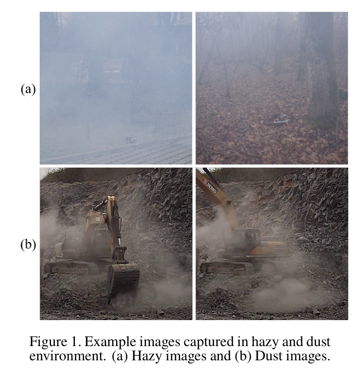
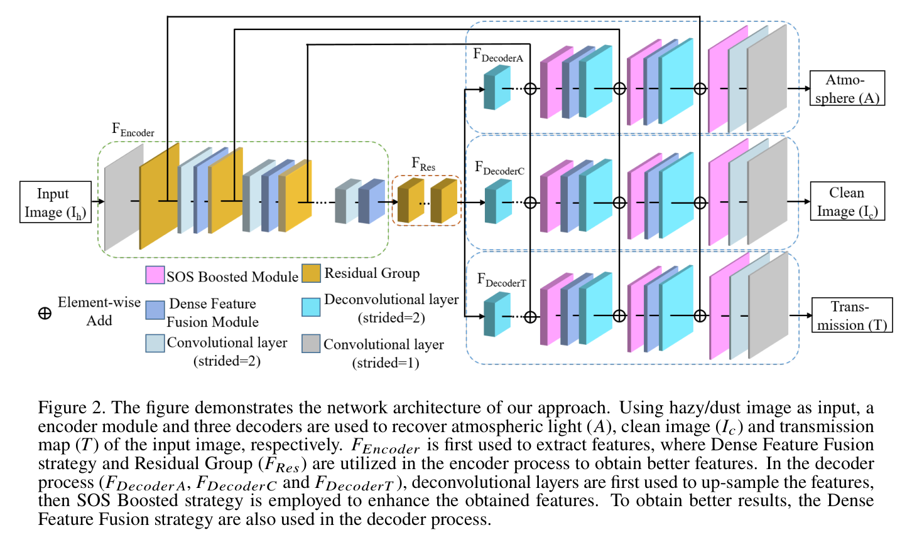
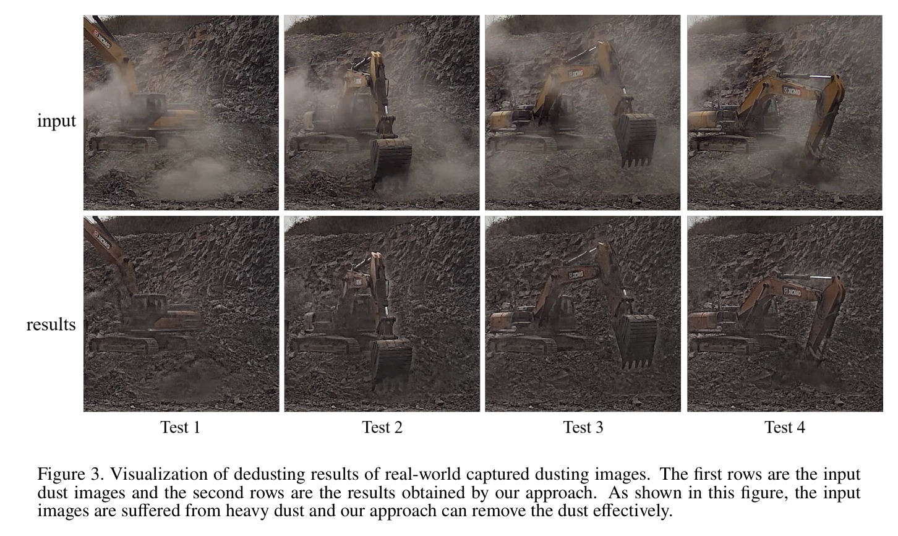
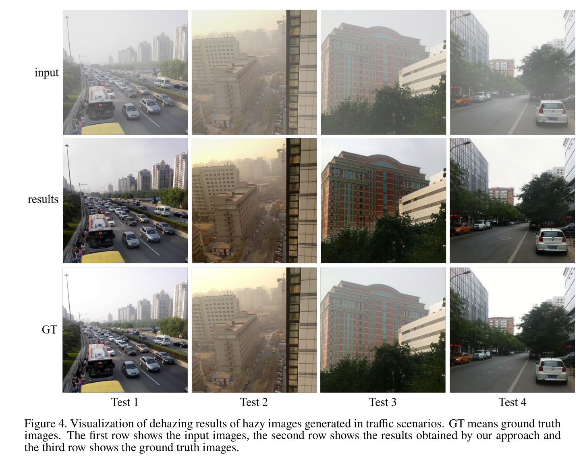
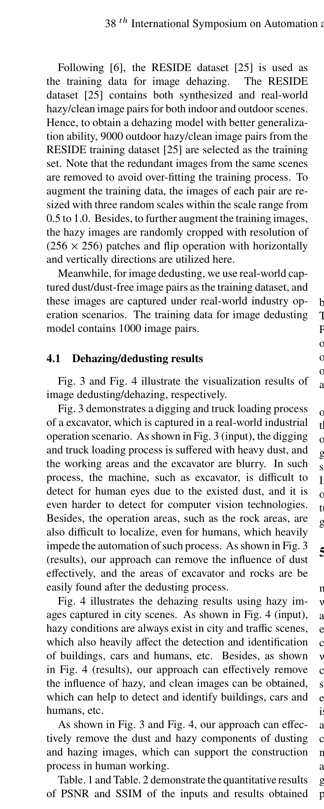
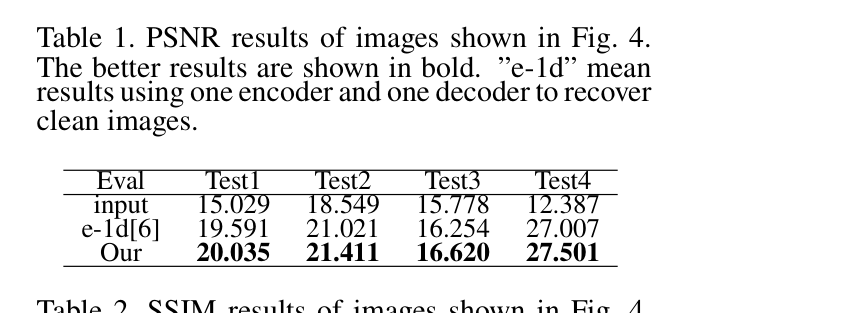
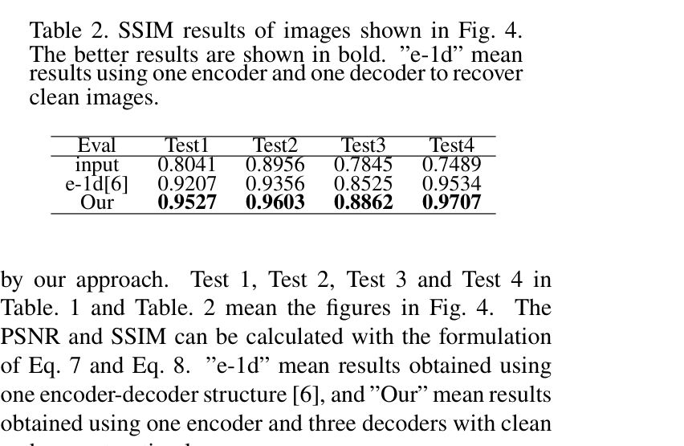

Image Dedusting with Deep Learning based Closed-Loop Network
Xibin Song, Liangjun Zhang, Dingfu Zhou, Jin Fang · 38th International Symposium on Automation and Robotics in Construction (ISARC 2021)
한줄 요약 — U-Net 계열의 공유 encoder에서 atmospheric light·clean image·transmission 전용 decoder 세 갈래를 분기하고, 세 출력을 대기 산란식으로 다시 합성해 원 입력과 맞추는 reconstruction loss를 clean loss와 함께 학습한다. 안개 네 영상에서 1-decoder 기준선보다 PSNR·SSIM이 모두 높았고 실제 굴착·상차 먼지를 제거했지만 downstream 인지는 평가하지 않았다.
1.연구 배경 및 동기
분진이 카메라 기반 건설현장 인지를 무너뜨리는 문제
건설·채석·상차 현장의 굴착과 차량 이동은 먼지를 일으키고 안개·연무가 겹치면 대비와 색이 더 약해진다. 이 산란은 굴착기·암석·도로·작업영역을 흐려 객체검출·의미분할·깊이처리의 입력까지 오염시킨다. 저자들은 별도 거리센서나 다중 frame 없이 단일 RGB 영상에서 깨끗한 영상을 복원하되, 산란의 물리 성분도 함께 예측해 영상 형성과 일치시키는 문제를 다룬다.
대기 산란 모델은 관측 I_h를 깨끗한 영상 I_c, 위치별 투과도 T, 전역 대기광 A로 설명한다. 이 논문은 공유 encoder 뒤의 세 decoder가 A, I_c, T를 동시에 복원하고, 이를 산란식으로 재합성한 I_h와 원 입력의 오차까지 학습한다. 따라서 출력 분해와 재합성이 닫힌 고리를 이룬다.

원문 Figure 1 · PDF p.1 — Figure 1. Example images captured in hazy and dust environment. (a) Hazy images and (b) Dust images.
선행 연구의 한계
dark channel·color attenuation·haze-line 같은 수작업 prior는 실제 산업 먼지의 조명·색 변화에서 가정이 깨질 수 있다.
clean image만 직접 회귀하는 단일 decoder는 대기광과 투과도라는 물리 성분을 명시적으로 감독하지 않아 산란 일관성을 확인하기 어렵다.
안개 제거 데이터와 달리 실제 먼지/무먼지 정렬 영상쌍은 만들기 어렵고, 산업 현장 분진 분포는 합성 haze와 차이가 크다.
복원 품질이 높아도 객체검출·분할의 mAP·mIoU 또는 안전 판단이 실제로 좋아지는지는 별도 검증이 필요하다.
이 연구의 기여
하나의 encoder와 atmospheric light·clean image·transmission용 세 decoder를 갖춘 폐루프 dedusting/dehazing network를 제안했다.
clean ground truth 감독과 A·I_c·T로 입력을 재구성하는 reconstruction 감독을 동일 가중치로 결합했다.
Residual Group, Dense Feature Fusion과 SOS boosting을 encoder·decoder에 통합해 다중 해상도 정보를 복원했다.
RESIDE 실외 9000쌍과 실제 산업현장 dust/dust-free 1000쌍으로 안개와 먼지 모델을 학습했다.
1-encoder/1-decoder 기준선과 비교해 안개 영상 네 사례에서 PSNR·SSIM을 모두 높이고 실제 굴착·상차 분진의 정성 복원을 제시했다.
2.방법론 및 시스템 구성
입력 I_h는 convolution·Residual Group·DFF를 지나는 공유 encoder에서 압축된다. Residual Group은 Conv-ReLU-Conv와 skip addition의 block 세 개로 구성한다. DFF는 비인접 scale을 융합해 U-Net의 인접 skip에서 놓칠 수 있는 공간정보를 보완한다.
공유 특징은 A, I_c, T decoder로 갈라지며 deconvolution, LReLU, SOS boosting과 DFF로 세 성분을 복원한다. I_c는 paired ground truth와, I_hat_h=T I_c+(1-T)A는 원 입력과 비교하고 두 손실에 각각 0.5를 준다.
처리 파이프라인
1
안개·먼지 paired data 준비
안개 모델은 중복 장면을 제거한 RESIDE 실외 hazy/clean 9000쌍을 사용한다. 먼지 모델은 실제 산업 작업에서 동일 장면의 dust/dust-free 1000쌍을 별도 수집한다. 논문은 두 도메인의 성능을 동일한 정량표로 합치지 않고 안개는 정량, 먼지는 정성으로 제시한다.
2
scale·crop·flip 증강
각 영상쌍을 0.5~1.0 범위의 무작위 scale 세 가지로 resize하고 256×256 patch를 random crop한다. 수평·수직 flip을 추가해 제한된 paired data의 장면 다양성을 늘린다.
3
공유 encoder와 Residual Group
첫 convolution은 11×11, 나머지 convolution·deconvolution은 3×3 kernel을 쓴다. encoder의 Residual Group은 Conv-ReLU-Conv residual block 세 개로 구성해 깊은 특징을 강화한다.
4
Dense Feature Fusion
DFF는 비인접 level 특징과 공간정보를 결합한다. encoder의 Residual Group 앞과 decoder의 SOS module 뒤에 배치해 U-Net의 인접 연결만으로 생기는 정보 단절을 보완한다.
5
세 decoder의 물리 성분 복원
동일 encoder 특징을 atmospheric light A, clean image I_c, transmission T 전용 branch로 분리한다. 각 decoder는 stride-2 deconvolution으로 upsample하고 convolution/deconvolution 뒤에 negative slope 0.2의 LReLU를 사용한다.
6
SOS boosting과 폐루프 재구성
SOS boosting은 현재 추정과 입력을 강화해 다시 복원함으로써 신호대잡음비를 높인다. 최종 A, I_c, T를 산란식으로 재구성한 I_hat_h와 원 입력의 오차가 세 branch를 연결한다.
7
학습과 평가
Adam으로 100 epoch, batch 16, β1=0.9, β2=0.999를 사용하고 10 epoch마다 learning-rate decay 0.75를 적용한다. 원문 초기 학습률 표기는 `104`로 모호해 그대로 수치화하지 않는다. 복원은 PSNR과 SSIM으로 평가한다.
원문 수식과 의미
대기 산란 영상 형성 모델
I_h(x)=T(x)I_c(x)+(1-T(x))A
관측 먼지·안개 영상은 위치별로 투과된 깨끗한 영상과 대기광 산란 성분의 합이다. network의 세 decoder가 이 식의 A, I_c, T를 각각 추정한다.
첫 항은 clean ground truth 복원, 둘째 항은 예측 성분으로 원 입력을 재구성하는 폐루프 감독이다. 수식은 L1로 쓰였지만 구현 절은 MSE라고 기술해 실제 loss 종류에는 원문 내부 불일치가 있다.
SOS boosting
\hat J_b=g(I+\hat J)-\hat J
기존 추정 영상과 입력을 강화해 복원기 g에 다시 넣고 이전 추정을 빼는 방식으로 dehazing/dedusting 결과를 정제한다.

원문 Figure 2 · PDF p.3 — Figure 2. The figure demonstrates the network architecture of our approach. Using hazy/dust image as input, a encoder module and three decoders are used to recover atmospheric light (퐴), clean image (퐼푐) and transmission map (푇) of the input image, respectively. 퐹퐸푛푐표푑푒푟is first used to extract features, where Dense Feature Fusion strategy and Residual Group (퐹푅푒푠) are utilized in the encoder process to obtain better features. In the decoder process (퐹퐷푒푐표푑푒푟퐴, 퐹퐷푒푐표푑푒푟퐶and 퐹퐷푒푐표푑푒푟푇), deconvolutional layers are first used to up-sample the features, then SOS Boosted strategy is employed to enhance the obtained features. To obtain better results, the Dense Feature Fusion strategy are also used in the decoder process.
3.핵심 기술
물리 분해와 재합성의 폐루프
세 decoder는 산란의 설명변수 A·I_c·T를 분리한다. clean branch만 정답에 맞추면 A와 T가 임의로 흐를 수 있지만, 재구성 loss는 세 출력이 함께 원 영상 I_h를 설명하도록 묶는다. 즉 supervised clean loss에 물리식 기반 self-consistency를 더한다.
A·I_c·T 동시 추정
clean loss와 input reconstruction loss를 0.5씩 결합
수식의 L1과 구현 설명의 MSE 불일치를 재현 시 확인해야 함
다중 scale feature 보존
먼지·안개는 넓은 대비 손실과 경계 세부 흐림을 함께 만든다. DFF는 비인접 level을 연결하고 Residual Group은 국소 특징을 강화하며 SOS boosting은 추정을 반복 정제한다. 전역 산란과 객체 윤곽을 함께 복원하려는 설계다.
Residual Group당 residual block 3개
encoder와 decoder 양쪽의 Dense Feature Fusion
deconvolution 기반 upsampling과 SOS boosted module
실제 분진 paired 학습
안개는 RESIDE 실외 9000쌍, 먼지는 산업 operation에서 수집한 dust/dust-free 1000쌍으로 별도 학습한다. 굴착·트럭상차 영상의 excavator와 rock area가 또렷해졌지만, 먼지 농도별 정량 test와 장면 분리·정렬 방식은 충분히 설명되지 않는다.
RESIDE outdoor 9000쌍
실제 산업 dust/dust-free 1000쌍
먼지 결과는 Fig.3의 정성 비교만 제공
복원 지표와 산업인지 간 간극
안개 네 사례에서 제안법은 단일 encoder-decoder보다 PSNR·SSIM이 모두 높았다. 그러나 이 지표는 clean 정답과의 픽셀·구조 유사도이며 굴착기 검출이나 rock segmentation을 직접 보장하지 않는다. 현장 적용에는 downstream task와 지연시간 검증이 필요하다.
PSNR은 pixel MSE 기반, SSIM은 구조 유사도 기반
e-1d 단일 decoder가 직접 비교 기준선
mAP·mIoU·FPS·temporal flicker는 보고되지 않음
4.실험 결과
실험 환경·장비·데이터
안개 학습은 RESIDE의 실외 hazy/clean image pair 9000개를 사용하고 같은 장면의 중복 이미지를 제거했다.
먼지 학습은 실제 산업 작업에서 촬영한 dust/dust-free image pair 1000개를 사용했다.
입력 증강은 0.5~1.0 무작위 scale 세 개, 256×256 random crop, horizontal·vertical flip이다.
안개 결과는 Fig.4의 네 test image에서 입력, 1-encoder/1-decoder e-1d, 제안 1-encoder/3-decoder를 PSNR·SSIM으로 비교했다.
먼지 결과는 실제 굴착·truck loading 장면의 입력과 복원 영상을 정성 비교했다.
비교 기준
복원 전 hazy input
선행 SOS boosted dehazing의 one encoder-one decoder 구조(e-1d)
먼지 영상에는 별도 정량 baseline 표가 제시되지 않았다.
평가 지표
Peak Signal-to-Noise Ratio(PSNR)
Structural Similarity Index Measure(SSIM)
실제 먼지 장면의 시각적 가시성은 정성평가
검출·분할 정확도와 추론속도는 평가하지 않음

원문 Figure 3 · PDF p.5 — Figure 3. Visualization of dedusting results of real-world captured dusting images. The first rows are the input dust images and the second rows are the results obtained by our approach. As shown in this figure, the input images are suffered from heavy dust and our approach can remove the dust effectively.

원문 Figure 4 · PDF p.5 — Figure 4. Visualization of dehazing results of hazy images generated in traffic scenarios. GT means ground truth images. The first row shows the input images, the second row shows the results obtained by our approach and the third row shows the ground truth images.
핵심 결과 해석
안개 네 test image에서 제안 3-decoder network는 e-1d보다 PSNR과 SSIM이 모두 높았다. PSNR은 각각 20.035, 21.411, 16.620, 27.501dB였고 e-1d는 19.591, 21.021, 16.254, 27.007dB였다. SSIM도 제안법이 0.9527, 0.9603, 0.8862, 0.9707로 e-1d의 0.9207, 0.9356, 0.8525, 0.9534를 앞섰다. 네 사례뿐이지만 clean·reconstruction supervision과 세 성분 분해가 단일 decoder보다 ground truth 복원을 개선했음을 보여준다.
실제 굴착·트럭상차 먼지 영상에서는 입력에서 흐릿하던 excavator, 작업영역과 rock area가 복원 후 더 쉽게 구분되는 정성 결과를 제시했다. 그러나 dust test에는 PSNR·SSIM 표나 독립 baseline이 없고, 저자들이 동기로 제시한 stone/truck detection과 segmentation에 복원 영상을 넣어 성능을 재평가하지 않았다. 따라서 '먼지를 제거했다'는 시각적 효과와 '자율작업 인지가 강건해졌다'는 시스템 수준 효과를 구분해야 한다.
정량 결과
평가 항목
정량 결과
조건·맥락
원문 근거
제안법 PSNR
20.035, 21.411, 16.620, 27.501dB
Fig.4 안개 영상 Test1~Test4, one encoder-three decoders
PDF p.6
e-1d PSNR
19.591, 21.021, 16.254, 27.007dB
같은 네 안개 영상의 one encoder-one decoder 기준선
PDF p.6
제안법 SSIM
0.9527, 0.9603, 0.8862, 0.9707
Fig.4 안개 영상 Test1~Test4
PDF p.6
학습 데이터 규모
안개 9000쌍, 먼지 1000쌍
RESIDE outdoor hazy/clean과 실제 산업 dust/dust-free pair
PDF p.6
실패 사례와 경계조건
실제 먼지 영상의 결과는 정성 사례뿐이어서 강한 농도 변화, 역광, 색조 변화에서의 실패율을 알 수 없다.
수식은 L1 loss, 구현 절은 MSE라고 서로 다르게 적어 동일 결과를 재현할 때 핵심 설정이 모호하다.
초기 learning rate가 PDF에 `104`로 인쇄되어 지수 부호를 확인할 수 없고 그대로는 재현 설정이 불완전하다.
single-image 처리라 영상에서 frame별 출력 변동과 flicker가 발생할 가능성을 평가하지 않았다.

원문 Figure 3 · PDF p.6 — Fig. 3 and Fig. 4 illustrate the visualization results of image dedusting/dehazing, respectively. Fig. 3 demonstrates a digging and truck loading process of a excavator, which is captured in a real-world industrial operation scenario. As shown in Fig. 3 (input), the digging and truck loading process is suffered with heavy dust, and the working areas and the excavator are blurry. In such process, the machine, such as excavator, is difficult to detect for human eyes due to the existed dust, and it is even harder to detect for computer vision technologies. Besides, the operation areas, such as the rock areas, are also difficult to localize, even for humans, which heavily impede the automation of such process. As shown in Fig. 3 (results), our approach can remove the influence of dust effectively, and the areas of excavator and rocks are be easily found after the dedusting process. Fig. 4 illustrates the dehazing results using hazy im- ages captured in city scenes. As shown in Fig. 4 (input), hazy conditions are always exist in city and traffic scenes, which also heavily affect the detection and identification of buildings, cars and humans, etc. Besides, as shown in Fig. 4 (results), our approach can effectively remove the influence of hazy, and clean images can be obtained, which can help to detect and identify buildings, cars and humans, etc. As shown in Fig. 3 and Fig. 4, our approach can effec- tively remove the dust and hazy components of dusting and hazing images, which can support the construction process in human working. Table. 1 and Table. 2 demonstrate the quantitative results of PSNR and SSIM of the inputs and results obtained
5.한계 및 향후 연구
현재 한계
먼지 제거에는 PSNR·SSIM의 정량표가 없고 제한된 실제 장면의 시각적 비교만 제공한다.
복원 후 객체검출·의미분할·깊이추정 성능과 안전 모니터링 개선을 측정하지 않았다.
loss가 L1인지 MSE인지 원문 내부 설명이 충돌하고 초기 learning rate 표기도 모호해 완전 재현이 어렵다.
추론시간, FPS, model size와 연속영상의 temporal consistency가 보고되지 않아 실시간 현장 적용성을 판단하기 어렵다.
향후 연구
분진 농도·조명·재료가 다양한 독립 test set에서 PSNR·SSIM과 현장 검출 mAP·분할 mIoU를 함께 평가한다.
dedusting network와 객체검출·분할 network를 task-aware loss로 공동학습해 픽셀 복원보다 작업 성능을 직접 최적화한다.
광류와 산란 성분의 시간 일관성을 쓰는 video dedusting으로 flicker를 줄이고 FPS와 지연을 검증한다.
불확실도 또는 먼지 농도를 출력해 복원이 불신될 때 LiDAR·radar 가중치를 높이거나 안전정지를 호출한다.
6.한마디로 정리
핵심 방법은?
공유 U-Net encoder와 A·I_c·T 전용 세 decoder, DFF·Residual Group·SOS boosting을 결합하고 clean 및 산란식 재구성 loss로 폐루프 학습한다.
핵심 결과는?
RESIDE 안개 네 사례에서 1-decoder보다 PSNR·SSIM이 모두 높았고 실제 굴착·상차 먼지 영상의 가시성을 정성적으로 개선했다.
한계는?
먼지 정량평가·downstream 인지·실시간성이 없고 loss와 learning-rate 기술이 모호해 산업 현장 효과와 재현성이 충분히 입증되지 않았다.
자율굴착기에서는 굴착이 만든 분진이 카메라의 재질분류, 장애물·트럭 검출과 작업영역 분할을 약화시키는 자기교란이 된다. 이 network를 camera 전처리로 두면 영상과 LiDAR 융합 입력을 안정화할 수 있고, A·T 출력은 시야 열화와 camera 신뢰도의 단서가 될 수 있다.
안전 시스템에는 그럴듯한 복원보다 객체 경계 보존과 허위 생성 방지가 중요하다. 검출·분할 loss, 멀티센서 일치성과 복원 불확실도를 함께 써야 하며, 극심한 분진에서는 radar·LiDAR 우선 또는 정지정책으로 전환해야 한다. 제진은 센서 신뢰도 관리의 한 구성요소다.
camera semantic branch 앞에 dedusting을 두고 mAP·mIoU 개선과 end-to-end latency를 함께 측정해야 한다.
예측 transmission T를 공간별 시야 신뢰도로 변환해 camera-LiDAR fusion weight와 안전속도를 조절할 수 있다.
유압 굴착 cycle의 먼지 발생 시점과 optical flow를 이용하면 single-image보다 일관된 video 복원이 가능하다.
복원 불확실성이 높을 때 radar·LiDAR 우선 또는 안전정지로 전환하는 fail-safe가 필요하다.
7.전체 그림·표
본문 핵심 위치에 배치하지 않은 원문 Figure와 Table을 원문 페이지 순서로 수록한다.

원문 Table 1 · PDF p.6 — Table 1. PSNR results of images shown in Fig. 4. The better results are shown in bold. ”e-1d” mean results using one encoder and one decoder to recover clean images.

원문 Table 2 · PDF p.6 — Table 2. SSIM results of images shown in Fig. 4. The better results are shown in bold. ”e-1d” mean results using one encoder and one decoder to recover clean images.